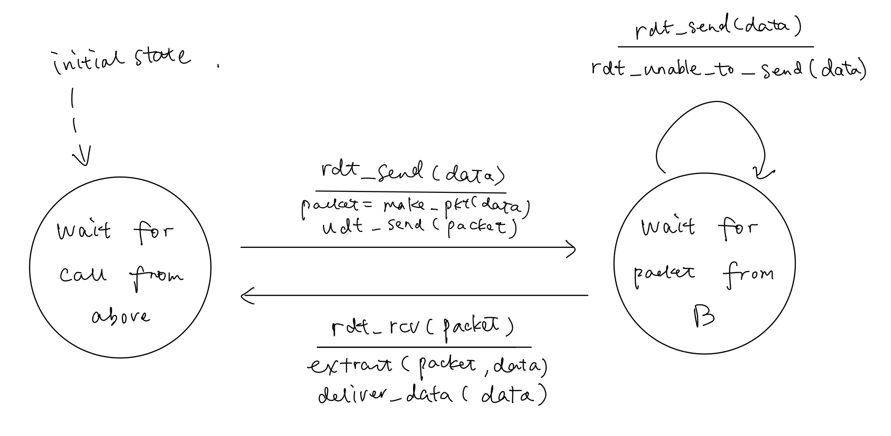
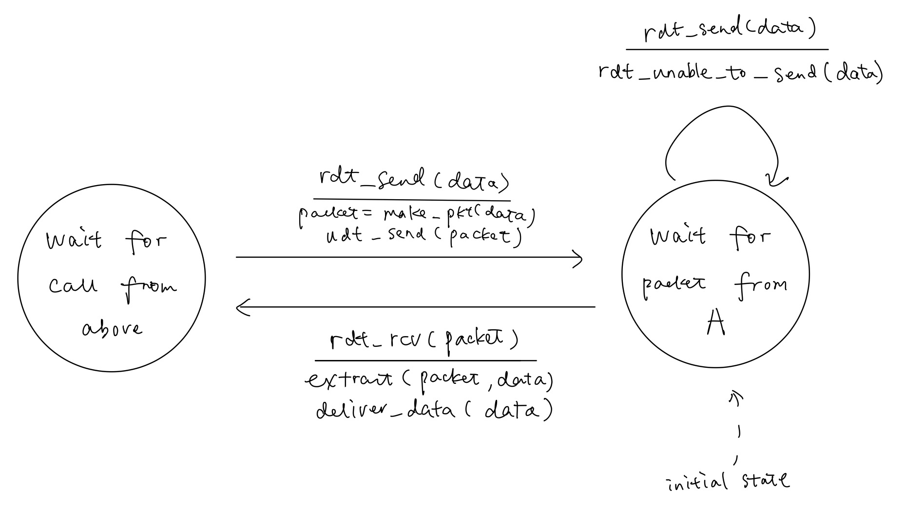

EECS325 Spring 2019
Yue Shu
Due: Tuesday, March 5, 2019
The HTTP response can have an empty body when there is no content to be sent in the response payload body.
For example, HTTP response with HTTP status 204 could have an empty body.
Only application-layer protocols are metioned in this problem, so the setup of TCP connection is not included in my answer.
SMTP protocol over TCP connectioniterated query:
recursive query:
Yes, it is possible for organization’s Web server and mail server to have exactly the same alias for a host name.
type=Atype=MXa. Assume TCP could utilize the full bandwidth continuously and the average packet size is 60 bytes, how long does it take for the TCP sequence numbers to wrap around completely?
The sequence number field in the TCP header is 32 bits long, so we can have at most packets in total. And the total wraparound time should be calculated as below:
b. Suppose an added 32-bit timestamp field increments 1000 times during the wraparound time you found above. How long would it take for the timestamp to wrap around?
Since the timestamp field incremetns 1000 times during the -second wraparound time, the average time would be
And to wrap around the timestamp field completely, we may have the expression as below:
Therefore, it will take around 281 years in total.
a. What is the 1s complement of the sum of these 8-bit bytes? (Although TCP and UDP use 16-bit words in computing the checksum, you only need to consider 8-bit based checksum for this problem)
First of all we shall have the sum as below:
And to wrap around, we have:
And finally, we flip all the bits to have the 1s complement of the sum:
b. Why use 1s complement of the sum instead of the sum itself as the checksum?
It saves time for the receiver to validate the checksum. By using 1s complement of the sum to get the checksum, the receiver can simply add up all the 16-bit words in the header along with the checksum together and then get the 1s complement of it and use it for validation. Given that there is no bit error in the packet, the final result should just be a chunk of zero. So as long as the result is not zero, there must be an error.
By using the method described above, the receiver does not have to compare the sums bit by bit to find the error. Instead, it can compare two chunks of numbers all in one, which saves more time in nature.
Consider two network entities, A and B, which are connected by a perfect bidirectional channel (i.e., any message sent will be received correctly; the channel will not corrupt, lose, or reorder packets). A and B are to deliver data messages to each other in an alternating manner: First, A must deliver a message to B, then B must deliver a message to A, then A must deliver a message to B and so on. If an entity is in a state where it should not attempt to deliver a message to the other side, and there is an event like rdt_send(data) call from above that attempts to pass data down for transmission to the other side, this call from above can simply be ignored with a call to rdt_unable_to_send(data), which informs the higher layer that it is currently not able to send data. [Note: This simplifying assumption is made so you don’t have to worry about buffering data.]
Draw a FSM specification for this protocol (one FSM for A, and one FSM for B). Note that you do not have to worry about a reliability mechanism here; the main point of this question is to create a FSM specification that reflects the synchronized behavior of the two entities. You should use the following events and actions that have the same meaning as protocol rdt1.0 in Figure 3.9: rdt_send(data), packet = make_pkt(data), udt_send(packet), rdt_rcv(packet), extract(packet,data), deliver_data(data). Make sure your protocol reflects the strict alternation of sending between A and B. Also, make sure to indicate the initial states for A and B in your FSM descriptions.
FSM for A:

FSM for B:

What worth our attention is that the initial state for A is the "wait for call from above" state since A should always deliver a message B first.
For the same reason as above, the initial state for B is the "wait for packet from A" state.
Also, we don't need to worry about the idle state transition of the "wait for call from above" state since the mechanism of the transition between A and B guarantees that A will never receive a message from B when it shouldn't, and vice versa.